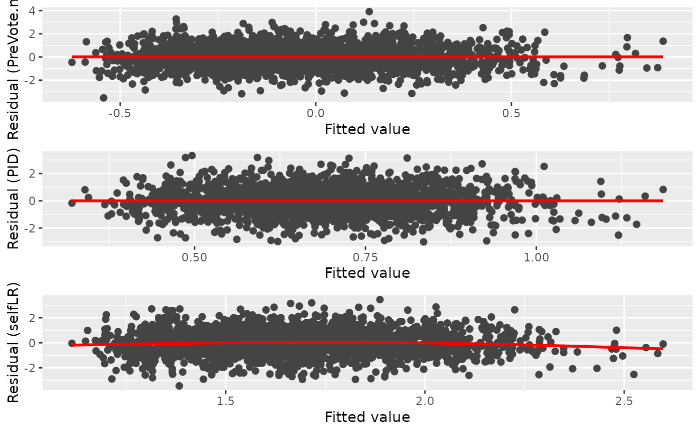
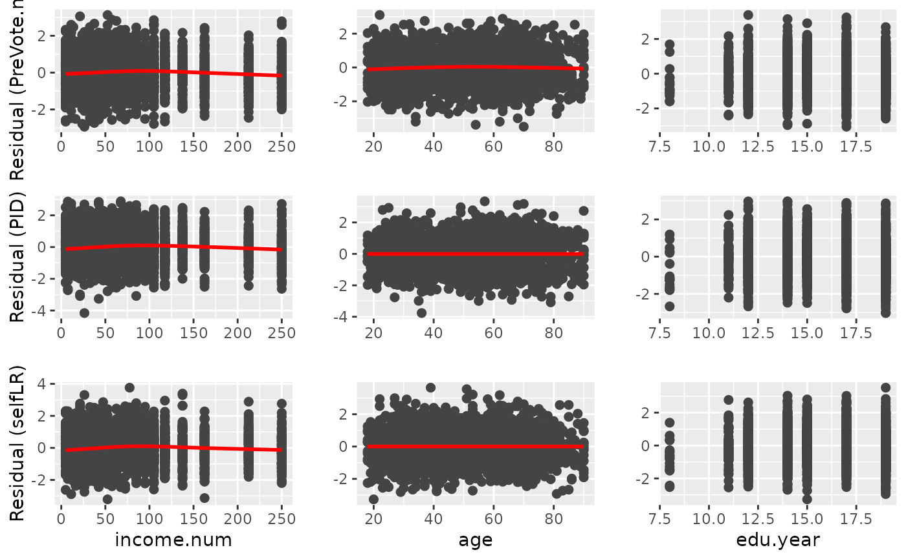
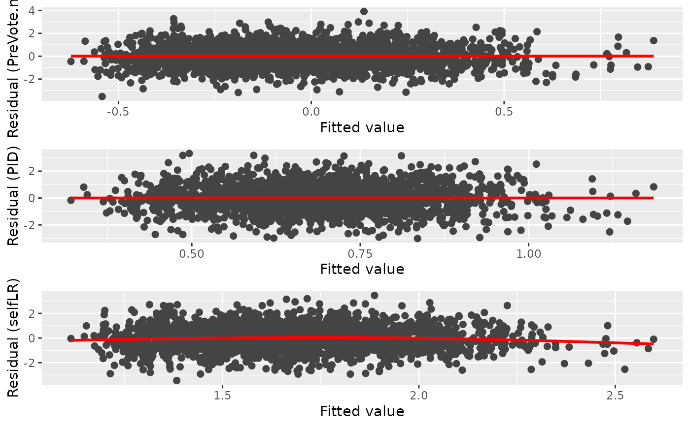
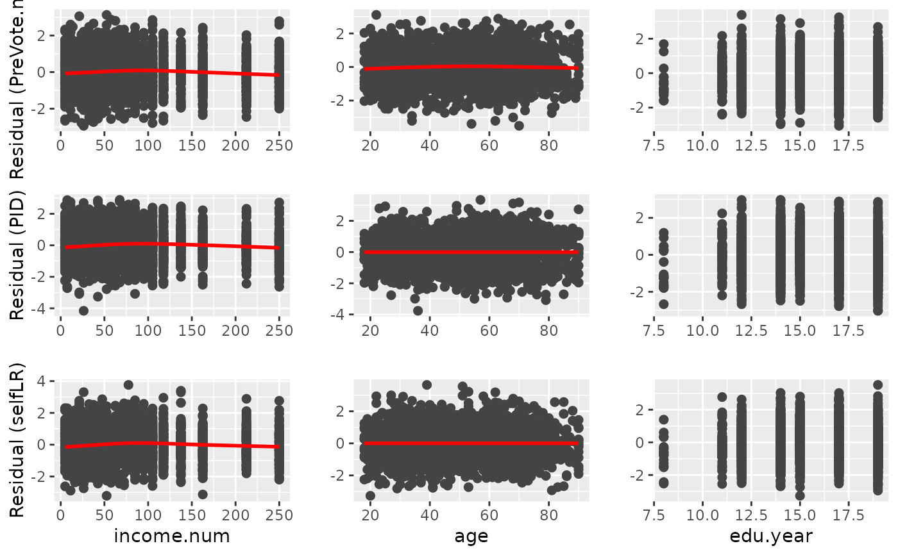

A set of visualization tools for the diagnostic of the fitted model in
the partial association analysis. It can provides a plot matrix including Q-Q plots,
residual-vs-fitted plots, residual-vs-covariate plots of all the fitted models.
This function also support the direct diagnostic of the cumulative link regression model
in the class of clm, glm, lrm,
orm, polr. Currently, vglm
is not supported.
Usage
diagnostic.plot(object, ...)
# S3 method for default
diagnostic.plot(object, ...)
# S3 method for resid
diagnostic.plot(object, output = c("qq", "fitted", "covariate"), ...)
# S3 method for PAsso
diagnostic.plot(
object,
output = c("qq", "fitted", "covariate"),
model_id = NULL,
x_name = NULL,
...
)
# S3 method for glm
diagnostic.plot(
object,
output = c("qq", "fitted", "covariate"),
x = NULL,
fit = NULL,
distribution = qnorm,
ncol = NULL,
alpha = 1,
xlab = NULL,
color = "#444444",
shape = 19,
size = 2,
qqpoint.color = "#444444",
qqpoint.shape = 19,
qqpoint.size = 2,
qqline.color = "#888888",
qqline.linetype = "dashed",
qqline.size = 1,
smooth = TRUE,
smooth.color = "red",
smooth.linetype = 1,
smooth.size = 1,
fill = NULL,
resp_name = NULL,
...
)
# S3 method for clm
diagnostic.plot(object, output = c("qq", "fitted", "covariate"), ...)
# S3 method for lrm
diagnostic.plot(object, output = c("qq", "fitted", "covariate"), ...)
# S3 method for orm
diagnostic.plot(object, output = c("qq", "fitted", "covariate"), ...)
# S3 method for polr
diagnostic.plot(object, output = c("qq", "fitted", "covariate"), ...)Arguments
- object
The object in the support classes (This function is mainly designed for
PAsso).- ...
Additional optional arguments can be passed onto
ggplotfor drawing various plots.- output
A character string specifying what type of output to plot. Default is
"qq"which produces a plot matrix with quantile-quantile plots of the residuals."fitted"produces a plot matrix between residuals and all corresponding fitted responses."covariates"produces a plot matrix between residuals and corresponding covariate.- model_id
A number refers to the index of the model that needs to be diagnosed. If NULL, all models will be diagnosed.
- x_name
A string refers to the covariate name that needs to be diagnosed. If NULL, all adjustments will be diagnosed.
- x
A vector giving the covariate values to use for residual-by- covariate plots (i.e., when
output = "covariate").- fit
The fitted model from which the residuals were extracted. (Only required if
output = "fitted"andobjectinherits from class"resid".)- distribution
Function that computes the quantiles for the reference distribution to use in the quantile-quantile plot. Default is
qnormwhich is only appropriate for models using a probit link function. Whenjitter.scale = "probability", the reference distribution is always U(-0.5, 0.5). (Only required ifobjectinherits from class"resid".)- ncol
Integer specifying the number of columns to use for the plot layout (if requesting multiple plots). Default is
NULL.- alpha
A single values in the interval [0, 1] controlling the opacity alpha of the plotted points. Only used when
nsim> 1.- xlab
Character string giving the text to use for the x-axis label in residual-by-covariate plots. Default is
NULL.- color
Character string or integer specifying what color to use for the points in the residual vs fitted value/covariate plot. Default is
"black".- shape
Integer or single character specifying a symbol to be used for plotting the points in the residual vs fitted value/covariate plot.
- size
Numeric value specifying the size to use for the points in the residual vs fitted value/covariate plot.
- qqpoint.color
Character string or integer specifying what color to use for the points in the quantile-quantile plot.
- qqpoint.shape
Integer or single character specifying a symbol to be used for plotting the points in the quantile-quantile plot.
- qqpoint.size
Numeric value specifying the size to use for the points in the quantile-quantile plot.
- qqline.color
Character string or integer specifying what color to use for the points in the quantile-quantile plot.
- qqline.linetype
Integer or character string (e.g.,
"dashed") specifying the type of line to use in the quantile-quantile plot.- qqline.size
Numeric value specifying the thickness of the line in the quantile-quantile plot.
- smooth
Logical indicating whether or not too add a nonparametric smooth to certain plots. Default is
TRUE.- smooth.color
Character string or integer specifying what color to use for the nonparametric smooth.
- smooth.linetype
Integer or character string (e.g.,
"dashed") specifying the type of line to use for the nonparametric smooth.- smooth.size
Numeric value specifying the thickness of the line for the nonparametric smooth.
- fill
Character string or integer specifying the color to use to fill the boxplots for residual-by-covariate plots when
xis of class"factor". Default isNULLwhich colors the boxplots according to the factor levels.- resp_name
Character string to specify the response name that will be displayed in the figure.
Value
A "ggplot" object for supported models. For class "PAsso", it returns a plot in
"gtable" object that combines diagnostic plots of all responses.
A "ggplot" object based on the input residuals.
A "ggplot" object based on the input residuals.
A plot in "gtable" object that combines diagnostic plots of all responses.
A "ggplot" object based on the residuals generated from glm object.
A "ggplot" object based on the residuals generated from clm object.
A "ggplot" object based on the residuals generated from lrm object.
A "ggplot" object based on the residuals generated from orm object.
A "ggplot" object based on the residuals generated from polr object.
Examples
# Import data for partial association analysis
data("ANES2016")
ANES2016$PreVote.num <- as.factor(ANES2016$PreVote.num)
PAsso_3v <- PAsso(responses = c("PreVote.num", "PID", "selfLR"),
adjustments = c("income.num", "age", "edu.year"),
data = ANES2016, uni.model = "probit",
method = c("kendall"),
resids.type = "surrogate", jitter = "latent")
diag_p1 <- diagnostic.plot(object = PAsso_3v, output = "qq")
 diag_p2 <- diagnostic.plot(object = PAsso_3v, output = "fitted")

diag_p3 <- diagnostic.plot(object = PAsso_3v, output = "covariate")
#> No covariate is specified, the first covariate(adjustment) is being used.
#> Warning: Computation failed in `stat_smooth()`:
#> x has insufficient unique values to support 10 knots: reduce k.
#> Warning: Computation failed in `stat_smooth()`:
#> x has insufficient unique values to support 10 knots: reduce k.
#> Warning: Computation failed in `stat_smooth()`:
#> x has insufficient unique values to support 10 knots: reduce k.

# Simply diagnose a model
# Fit cumulative link models
fit1 <- ordinal::clm(PreVote.num ~ income.num + age + edu.year, data = ANES2016, link = "logit")
# diagnostic.plot
plot_qq_1 <- diagnostic.plot(object = fit1, output = "qq")
plot_fit_1 <- diagnostic.plot(object = fit1, output = "fitted")
plot_cov_1 <- diagnostic.plot(object = fit1, output = "covariate")
#> No covariate `x` is specified, extract the first covariate from `fit`.
diag_p2 <- diagnostic.plot(object = PAsso_3v, output = "fitted")

diag_p3 <- diagnostic.plot(object = PAsso_3v, output = "covariate")
#> No covariate is specified, the first covariate(adjustment) is being used.
#> Warning: Computation failed in `stat_smooth()`:
#> x has insufficient unique values to support 10 knots: reduce k.
#> Warning: Computation failed in `stat_smooth()`:
#> x has insufficient unique values to support 10 knots: reduce k.
#> Warning: Computation failed in `stat_smooth()`:
#> x has insufficient unique values to support 10 knots: reduce k.

# Simply diagnose a model
# Fit cumulative link models
fit1 <- ordinal::clm(PreVote.num ~ income.num + age + edu.year, data = ANES2016, link = "logit")
# diagnostic.plot
plot_qq_1 <- diagnostic.plot(object = fit1, output = "qq")
plot_fit_1 <- diagnostic.plot(object = fit1, output = "fitted")
plot_cov_1 <- diagnostic.plot(object = fit1, output = "covariate")
#> No covariate `x` is specified, extract the first covariate from `fit`.